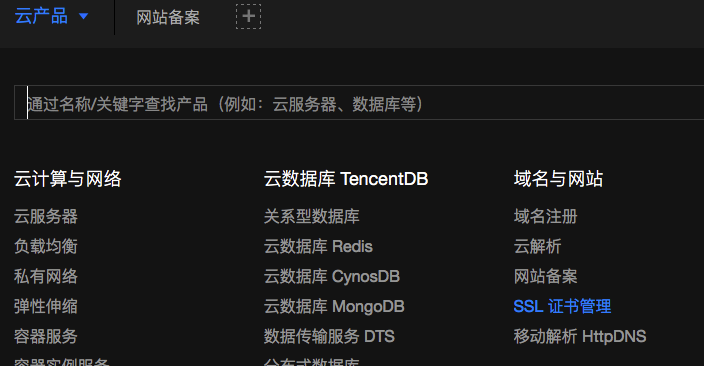

1.Let’s setup our brand new CentOS7.5 server supplied by TencentCloud to host our hexo blog! Contains : nginx, node.js, Git, hexo, https: !
1.Install nginx
1 | yum install nginx -i |
3.Https: SSL Certification
3.1.Apply for free SSL Certification

3.2.Download Certification at Local
3.3.Make dir for nginx cert on Server
1 | mkdir /etc/nginx/cert |
3.4.Copy .Crt and .Key to Server at Local
1 | scp ourCrt.crt root@ourDomain:/etc/nginx/cert/ |
##3.5.Configure nginx to supply https: listen to 443 on Server
1 | vi /etc/nginx/nginx.conf |
3.6.Redirect http: to https:
1 | add to nginx.conf |
4.Authorization for visitors 2018-12-09 22:15:08
1 | gpg --gen-random -armor 1 $ourPasswdLenth |
5.Install node.js
5.1.find the latest version address
1 | https://nodejs.org/en/download/ |
6.Setup Git
6.1.Setup Server
1 | useradd git |
6.2.Local setup git SSH
1 | //generate ssh key |
4.3.Server set allow passwd login
1 | vi /etc/ssh/sshd_config |
4.4.Local copy ssh key to server
1 | ssh-copy-id -i ~/.ssh/id_rsa.pub git@serverIp |
4.5.Server forbid passwd login
1 | vi /etc/ssh/sshd_config |
4.6.Server setup Auto Deploy
1 | cd /home/git/hexoBlog.git/hooks |
5.Local setup hexo deploy
1 | #Edit _config.yml in hexo project root dir |
6.Server setup ngnix
1 | nginx -t |
7.Local deploy hexo
1 | hexo d -g |
8.Https: SSL Certification
8.1.Apply for free SSL Certification
8.2.Download Certification at Local
8.3.Make dir for nginx cert on Server
1 | mkdir /etc/nginx/cert |
8.4.Copy .Crt and .Key to Server at Local
1 | scp ourCrt.crt root@ourDomain:/etc/nginx/cert/ |
##8.5.Configure nginx to supply https: listen to 443 on Server
1 | vi /etc/nginx/nginx.conf |
8.6.Redirect http: to https:
1 | add to nginx.conf |
9.Authorization for visitors 2018-12-09 22:15:08
1 | gpg --gen-random -armor 1 $ourPasswdLenth |
10.Install Python
1 | mkdir Download |